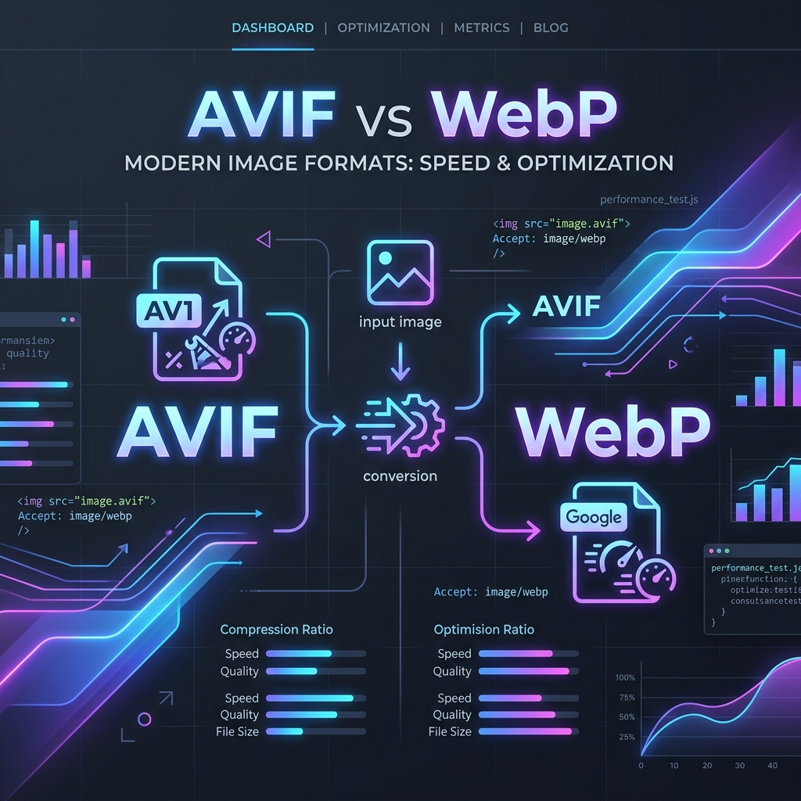

AVIF vs. WebP in 2026: The Ultimate Next-Gen Image Format Showdown

Web page performance optimization has undergone a massive paradigm shift. In 2026, serving oversized media files or relying entirely on legacy formats like JPEG and PNG is no longer acceptable. With search engines heavily penalizing poor Core Web Vitals (specifically Largest Contentful Paint), choice of image format is a critical engineering decision. While WebP has spent years as the default standard for modern web performance, AVIF has solidified its spot as the premium format of choice. In this guide, we dive deep into the technical specifications, compression ratios, browser compatibility, and deployment strategies of AVIF vs. WebP to help you optimize your assets.
1. The 2026 Next-Gen Format Landscape
To deliver modern web performance, developers utilize a prioritized multi-format delivery model. Understanding how these formats compare technically explains why we structure layouts around them:
- AVIF (AV1 Image File Format): The primary gold standard of 2026. Built on the open-source AV1 video codec's intra-frame encoding, AVIF offers high-performance compression, minimizing file size while retaining complex textures and sharp high-frequency edges.
- WebP: The secondary high-compatibility fallback. Developed by Google using VP8 video frame encoding, it remains the standard fallback for browsers or systems where AVIF is not preferred.
- Legacy Formats (JPEG / PNG): Reserved strictly for legacy user-agents, raw downloads, or absolute fallback situations.
2. AVIF: The Premium Standard for Image Compression
AVIF's compression efficiency is a major breakthrough. It achieves 30% to 50% better compression than WebP, and up to 50% to 60% better than traditional JPEGs, all while maintaining equivalent or superior visual quality (Structural Similarity Index, or SSIM).
Beyond file size, AVIF supports features that WebP cannot match:
- High Bit Depths: AVIF supports 10-bit and 12-bit color depths, preventing color-banding in smooth gradients. WebP is limited strictly to 8-bit color.
- HDR (High Dynamic Range): AVIF has native support for wide color gamuts and HDR lighting, allowing web graphics to look vibrant on modern display panels.
- Superior Detail Preservation: At low bitrates, JPEGs introduce blocky artifacts and WebP tends to smudge or blur high-frequency details. AVIF retains crisp details and textures far better under heavy compression.
3. WebP: The High-Compatibility Workhorse
If AVIF is technically superior, why talk about WebP? The answer lies in **universal adoption speed**. WebP has been supported across major browsers for many years, reaching a near-universal 98.5% browser support. In contrast, while AVIF has achieved broad integration across major platforms (Chrome, Safari, Firefox, Edge, iOS Safari), some legacy browsers, email clients, or corporate environments still lack native AVIF decoders.
Additionally, WebP has a significant advantage in **encoding speed**. It compresses images extremely quickly with low CPU overhead. AVIF encoding, due to its complex algorithmic architecture, is considerably more CPU-intensive and takes longer to compress. For client-side tools converting images instantly in browser memory, WebP remains a fast, seamless option.
4. AVIF vs. WebP: Comparison Matrix
| Capability / Metric | AVIF | WebP | Winner |
|---|---|---|---|
| File Size Reduction | 30% - 50% smaller than WebP | 25% - 34% smaller than JPEG | AVIF |
| Color Bit Depth | Supports 8, 10, and 12-bit (HDR) | Supports 8-bit only (SDR) | AVIF |
| High-Frequency Detail | Excellent retention at low bitrates | Prone to block smudging | AVIF |
| Encoding Speed | Slow (highly CPU-intensive) | Fast (low CPU overhead) | WebP |
| Global Browser Support | ~95% (Broad Support) | ~98.5% (Universal) | WebP |
5. Implementing Dynamic Multi-Format Fallbacks
You do not have to choose between AVIF and WebP. Modern web architecture allows you to serve AVIF to compatible browsers while gracefully falling back to WebP for others, without writing complex server-side scripts or executing heavy JavaScript bundles.
Using the HTML5 <picture> element, browser engines evaluate file declarations sequentially and download only the first compatible source, ignoring the rest:
<picture>
<!-- Best compression served first -->
<source srcset="hero-image.avif" type="image/avif">
<!-- Fallback next-gen choice -->
<source srcset="hero-image.webp" type="image/webp">
<!-- Legacy compatibility fallback -->
<img src="hero-image.jpg"
width="1200"
height="675"
alt="Modern AVIF vs WebP visual graphics showcase"
fetchpriority="high">
</picture>
6. Strategic Checklist for 2026 Production Sites
To maximize search rankings and page speeds, structure your optimization around the following rules:
- Priority Hints for LCP (Largest Contentful Paint): Hero images above the fold should never be lazy loaded. Attach `fetchpriority="high"` to tell the browser engine to fetch the asset immediately before downloading lower-priority resources.
- Smart Lazy Loading Below the Fold: For all images that appear below the viewport fold, attach the `loading="lazy"` attribute. This saves user bandwidth and improves initial page rendering times.
- Define Reservation Boxes: Set explicit `width` and `height` attributes on the fallback `
` tags. This ensures the browser reserves structural space before the image binary downloads, preventing layout shifts (CLS).
- Process Securely: Protect client data. Use browser-side batch systems like PicsConvert to convert, resize, and crop assets in sandboxed browser memory before hosting them online.
Conclusion
AVIF is the clear winner for file size efficiency and visual rendering in 2026. However, WebP is the ideal fallback. By combining them inside a standard <picture> element, you secure maximum performance without sacrificing compatibility. Transition your asset pipelines to an AVIF-first model with WebP fallbacks today, and watch your site speed scores soar.